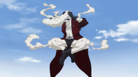

Wakaba is a man of average height, distinguishable by his brown hair, which is kept in an ostentatious pompadour-like style that protrudes frontwards from the top of his head in a large, curly and fluffy tuft. He is almost always seen with his eyes either closed or semi-open; they seem to have light-colored pupils, as shown when Wakaba opens one of them to display his surprise. His physique is peculiar in the fact that, despite Wakaba having quite a large belly, his abdominal and pectorals are well-defined. His guild mark is yellow in color, and is located near his left pectoral. He also seems to have mildly hairy legs. After the seven-year time skip, Wakaba loses his signature pompadour to what appears to be a receding hairline, gaining a straighter-looking hair style; this being slicked upwards in a spiked shape. He also gains wrinkles on his face, and has grown a thick, pointed beard on his chin. His outfit usually consists of a loose, light green shirt decorated with many motifs of stylized dark-colored flowers with five petals, a pair of pants cut down below Wakaba’s knees (held up by a light belt adorned with many black stars partially hidden by his shirt) and sandals held up by striped bands. He wears another, darker pair of short pants and simple dark shoes during his first appearance. In his youth, he donned more serious attires, which included a leather jacket of sorts and a pair of sunglasses, together with simple pants and shoes. After the disappearance of the 3rd master Makarov Dreyar and many prominent guild members, Wakaba switches to a simpler, less flamboyant outfit, consisting of a light-colored jacket with dark fur trimmings on its edges and dark cuffs. He wears this jacket over a simple shirt, with another black undershirt visible from its open collar. He has light pants matching his jacket, with large hemlines and a thin line going down each leg’s side, combined with simple dark shoes.
Wakaba is an extremely caring man, and is often seen in the company of his fellow guildmate, drinking buddy, and long-time friend Macao Conbolt. When together, Wakaba's extreme perverse tendencies often come to light, although, even when apart, Wakaba is still undeterred in his exploits, with Laki Olietta and Kinana being two of his usual targets for harassment. Wakaba, as with Macao, appears to have an obsession with Mirajane Strauss, and is, more often than not, often seen staring at her with a perverted look in his eyes, usually making less-than-subtle passes at her. Wakaba even went as far as asking her out, and, had she accepted, planned on divorcing his wife, in spite of the fact that the two have a daughter. Wakaba also dislikes the idea of marriage and seems to be afraid of, or at least disgusted by, his wife, in comparison to the young girls he is often seen with in the guild.
Wakaba had been a member of Fairy Tail since before Cana (the oldest Fairy Tail member of her generation) joined, and developed a strong relationship with his fellow guildmates, his friendship with Macao being the strongest of these said relationships. When Mirajane first joined the guild, Wakaba and Macao explained to Erza that despite the girl's siblings fitting in, Mirajane herself never spoke or smiled. Several days after Natsu found a "Dragon's" egg in a nearby forest, Wakaba and Macao sat a table and discussed the fact he and Lisanna were raising said egg, with Wakaba insisting that Dragons don't exist. Their conversation was interrupted, however, by a furious Mirajane, who destroyed the table they were sitting at, livid at the fact that Lisanna was fraternizing with someone from "Erza's side"; this made Macao and Wakaba wonder what exactly "Erza's side" meant.The next day, as Natsu rampaged around the guild looking for the egg, Wakaba remarked upon the terribleness of Natsu's generation, stating that he couldn't imagine what the Guild would be like in a few years when they all grew up.Moments later, when the egg hatched, Wakaba stood in total disbelief, unable to comprehend that a cat had emerged from it. However, his mood quickly changed to one of total joy, with him staring fondly at the blue cat as Macao cradled him in his arms.
Smoke Magic (煙魔法 Kemuri Mahō): Wakaba is able to manipulate and control pink-colored smoke produced from his pipe and use it in combat. Wakaba is able to manipulate the smoke in various ways, such as shaping it into a fist to punch enemies and into the form of a girl.

Transformation Magic (変身魔法 Henshin Mahō): Wakaba has shown to be able to use Transformation Magic, though he has very little control over it.